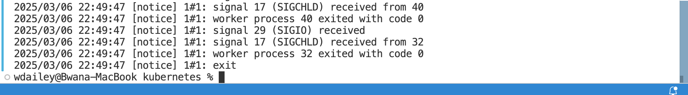
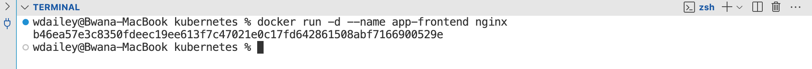
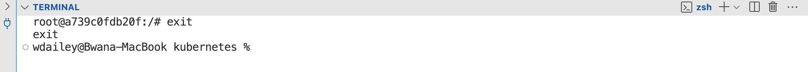

MlOps in Cloudera AI - Banking Usecase
1. MLOps (Machine Learning Operations) for a banking use case.
The goal is to demonstrate how to implement MLOps practices using MLFlow and Cloudera Machine Learning (CML). The exercise provides step-by-step instructions to build, deploy, and manage a machine learning model in a banking context, emphasizing reproducibility, scalability, and operational efficiency.
2. Key Objectives
Key Goals of the Exercise:
Data Generation and Exploration:
- Generate and explore data at scale using PySpark.
Model Development:
- Develop an XGBoost classifier to predict fraudulent credit card transactions.
Experiment Tracking:
- Utilize MLflow Tracking to monitor experiments from interactive notebook sessions.
Model Registry:
- Employ MLflow Registry to package model experiments in a uniform format, facilitating collaboration, deployments, and reproducibility.
Model Deployment:
- Deploy models as REST endpoints in a high-availability manner, with automated lineage building and metric tracking for MLOps purposes.
Pipeline Orchestration:
- Use CML Jobs to orchestrate an end-to-end automated pipeline, including monitoring for model drift and automatically initiating model retraining and redeployment as needed.
3. What You Will Learn
By completing this exercise, you will gain hands-on experience with:
- Building and deploying machine learning models in a real-world banking context.
- Using MLFlow for experiment tracking, model versioning, and deployment.
- Leveraging CML for end-to-end MLOps workflows.
- Implementing best practices for reproducibility, collaboration, and scalability in machine learning projects.
4. On Cloudera Console select Cloudera AI

5. Click on workbench name.

6. Click on New Project
{kind=link}
7. Enter the following parameters in the form:
Project Name: MLOps HOL <username>
Project Visibility: Private or Public
Initial Setup: Git -> https://github.com/cloudera-edu/CML_MLops_Banking_MLFlow.git
Runtimes:
1. Remove all default runtimes.
2. Select Advanced Options
3. Select: Workbench Editor / Python 3.9 Kernel / Standard Edition / 2024.02 Version
{kind=link}
8. Runtimes:
1. Remove all default runtimes.
2. Select Advanced Options
3. Select: Workbench Editor / Python 3.9 Kernel / Standard Edition / 2024.02 Version
Click create project

9. Go to Project settings -> Data Conections -> Copy the Connection Name to your notepad
You need this connection name to modify the various scripts in the upcoming step.

10. Create a CML Session and Install Requirements
Go to sessions tab and click on new session.

11. Launch a CML Session with:
Session Name: Mlops session-userx
Editor: Workbench
Kernel: Python 3.9
Edition: Standard
Version: 2024.02
Enable Spark: Version 3.2 or 3.3
Resource Profile: 2 vCPU / 4 GiB Mem / 0 GPU

12. In the prompt on the right side enter the following command:
!pip3 install -r requirements.txt
Hit Enter.

13. Once all packages have been installed, proceed to next step.

14. Open 00_datagen.py in your CML Session and update the Connection Name on Line no 160.
Save the file and press the play button in order to run the whole script. Code output is available on the right side of your screen.
{kind=link}
14.1 Code Highlights
Line 50: the cml.data_v1 library is imported. This library allows you to take advantage of CML Data Connections in order to launch a Spark Session and connect to the Data Lake. The DataConnection is used at lines 103 - 109 within the "createSparkConnection" module.
Lines 63 - 94: the "dataGen" module is used to create synthetic data for the classification use case. Observe the data attributes that are being created, and their respective types and value ranges.
Lines 132 -145: the PySark API for Apache Iceberg is used to create or append data to an Iceberg table format table from a PySpark dataframe.
14.2 Summary
In this lab you used CML Data Connections to preconfigure boiler plate code for data access to CDP and 3rd party data sources including Postgres, SQLServer, and even Snowflake. You can customize Data Connections to standardize and simplify Data Access configurations, as well as restrict access from 3rd party systems.
The PySpark Iceberg API allows you to create Iceberg tables from Spark DataFrames. It is similar and as simple as the standard PySpark API for interacting with Hive tables.
15. Open 01_train_xgboost.py in your CML Session and update the CONNECTION_NAME variables at lines 55 & Save it.
Next, press the play button in order to run the whole script. You will be able to observe code output on the right side of your screen.

15.1 Click on project tab.
{kind=link}
15.2 Click on Experiment tab.
Validate experiment creation. Open the Experiment Run and familiarize yourself with Experiment Run metadata. At the bottom of the page, open the Artifacts folder and notice that model dependencies have been tracked. 
{kind=link}
15.3 Code Highlights
- Line 41: the MLFlow package is imported. MLFlow is installed in CML Projects by default. An internal Plugin tranaslates MLFlow methods to CML API methods. There is no need to install or configure MLFlow in order to use its Tracking capabilities.
- Lines 71 - 98: XGBoost training code is defined within the context of an MLFlow Experiment Run. XGBoost code is otherwise unchanged. The "mlflow.log_param()" method is used to log model metrics. The "mlflow.log_model()" method is used to track model artifacts in the "artifacts" folder.
- Line 120: the MLFlow Client is used to interact with Experiment Run metadata. You can use the Client to search through runs, compare results, and much more.
15.4 Summary
In this lab used MLFlow to track experiment runs in the Experiments UI, access experiment rund ata programmatically via the MLFlow Client, and register Runs to the MLFlow Registry. When an Exoeriment Run is tracked, MLFlow automatically stores model artifacts and dependencies in the backend.
The Registry is a separate component from the Workspace and acts as a staging environment for optionally moving models and associated dependencies from one Workspace to another, for example in a DEV to QA to PRD pattern.
MLFlow in CML does not require any installation or configurations on the part of the CML Admins or Users. It is preinstalled by default in every CML Workspace. CML includes a special Plugin that translates MLFlow API calls to CML API v2 routines. You will learn more about CML API v2 in the next section.
16. Click on Sessions tab and select your running session.
{kind=link}
17. Return to 02_api_deployment.py and press the play button in order to run the whole script. You will be able to observe code output on the right side of your screen.
Once successful run Click on project tab

17.1 Go to Model Deployment tab
You will see your model is building and deploying & finally Deployed

17.2 Code Highlights
- Line 46: the "ModelDeployment" class is imported from the "mlops" util. This util has been placed in the "/home/cdsw" folder.
- Line 49: the CML API client is instantiated. The API provides you with over 100 Python methods to execute actions such as creating projects, launching jobs, and a lot more. In this example, the API is used to "list_projects()".
- Line 62: the API Client is passed as an argument to the ModelDeployment instance. The mlops.py util includes a few methods that extend and override API methods. Typically, CML Machine Learning Engineers create Python Interfaces to build custom MLOps pipelines as required by their use case.
- Line 56-60: the latest MLFlow Experiment Run is used to register the Model in the CML MLFlow Registry.
- Lines 68,74, 78, 81: the registered Model is used to create a new CML Model Deployment. The Model is first created, then built, and finally deployed.
17.3 Summary
In this lab you used CML APIv2 allows you to programmatically execute actions within CML Workspaces. You can use the API with plain curl CLI statements, or the Python Wrapper which is a lib that is preinstalled in every Cloudera CML Runtime. The API can be used both from 3rd party systems that are external to the CML Workspace, and within the CML Workspace.
CML Data Scientists leverage the API to build MLOPs Pipelines. In this lab you used a simple Python Interface to override API methods in order to build a standardized MLOps pipeline to register an Experiment Run in the MLFlow Registry, and then deploy an API Endpoint for model serving.
18. Click on Sessions tab and select your running session.

19. MLOps Pipeline
This section explains the most important aspects of 03_newbatch.py, 04_train_xgboost.py, and 05_api_redeployment.py.
In the above script only update the CONNECTION_NAME and don't run script.
Follow below steps to update the CONNECTION_NAME
19.1 Open 03_newbatch.py
Go to line 159, update the connection name, and save this file.

19.2 Open 04_train_xgboost.py & update the CONNECTION_NAME variables at line no 55 & Save it.

19.3 Open 05_api_redeployment.py & update the CONNECTION_NAME variables at line no 210 & Save it.
Click on project tab.

19.4 Create a CML Job for each. Do not run the jobs yet.
Go to the Jobs tab and click on New Job.
Please do not run the below job just create three jobs as per the below steps.
{kind=link}
19.5 Create Job "New Batch" with the following configurations:
Name: New Batch Userx
Script: 03_newbatch.py
Editor: Workbench
Kernel: Python 3.9
Spark Add On: Spark 3.2 or 3.3
Edition: Standard
Version: 2024.02
Schedule: Manual
Resource Profile: 2 vCPU / 4 Gib / 0 GPU
Click Create 
{kind=link}
19.6 Click on New Job

19.7 Create Job "New Batch" with the following configurations:
Name: Retrain XGBoost Userx
Script: 04_train_xgboost.py
Editor: Workbench
Kernel: Python 3.9
Spark Add On: Spark 3.2 or 3.3
Edition: Standard
Version: 2024.02
Schedule: Dependent on New Batch Userx
Resource Profile: 2 vCPU / 4 Gib / 0 GPU
Click Create

19.8 Click on New Job
You should see the dependency

19.9 Create Job "New Batch" with the following configurations:
Name: API Redeployment Userx
Script: 05_api_redeployment.py
Editor: Workbench
Kernel: Python 3.9
Spark Add On: Spark 3.2 or 3.3
Edition: Standard
Version: 2024.02
Schedule: Dependent on Retrain XGBoost Userx
Resource Profile: 2 vCPU / 4 Gib / 0 GPU
{kind=link}
19.10 Once you created all three jobs, manually trigger the New Batch job. Monitor execution in the Job History tab, and observe that once it is complete the next job in the MLOps pipeline, Retrain XGBoost, is triggered, and finally the last job, API Redeployment, is executed.

19.11 Once all there job run, go to model deployment tab. you will see your model is building, deploying and finally deployed.
Once finally deployed, go to the next step.

19.12 Code Highlights
- 03_newbatch.py is mostly identical to 00_datagen.py.
- 04_train_xgboost.py is nearly identical to "01_train_xgboost.py". However, at lines 66-68 Iceberg Snapshot metadata is stored as variables. This metadata is used at lines 70-74 in order to perform an Incremental Read i.e. only loading data from the Iceberg table within a start and end time boundary. The metadata is then saved as MLFlow Tags during Experiment Run execution.
- 05_api_redeployment.py includes both methods from the mlops util and code to execute the MLOps pipeline. This is also nearly identical to the code in "02_api_deployment.py".
19.13 Summary
In this lab you used CML Jobs in tandem with CML APIv2, Apache Iceberg, and MLFlow in order to orchestrate a more advanced MLOps pipeline. With just three scripts and a few lines of code, you've implemented a standardized CI/CD Process that adhers to MLOps Best Practices including data and model reproducibility, auditability, explainability. You did this leveraging built-in components and without any custom installations.
- In the first job, a new data batch is appended to the Iceberg Credit Card Transaction table.
- In the second job, you used Iceberg Time Travel in order to read data within specified time boundaries - in other words to access the latest batch of data only - and then retrain the same XGBoost Classifier with this data.
- Finally, in the last job, you redeployed a new API Endpoint version with the latest model version.
20. Model Monitoring
This section explains the most important aspects of 06_model_simulation.py and 07_model_monitoring.py.
20.1 Go to the sessions tab & select your running session
If your session expires, then create a new session.

20.2 Open 06_model_simulation.py and update CONNECTION_NAME variable at line no 62.
Click save.
Execute 06_model_simulation.py and immediately navigate out of the Session to the CML Model Deployment. Open the Monitoring tab and watch the monitoring dashboard get updated in real time as requests are received by the model endpoint.
{kind=link}
20.3 Click on 1h as shown in the image.

20.4

20.5 Open 07_model_monitoring.py in your CML Session
Do not edit anything for this step.
Run 07_model_monitoring.py. Explore the model monitoring diagrams on the right side of the page. How is your model performing? 
{kind=link}
20.6 Code Highlights
06_model_simulation.py creates more synthetic data and leverages the CDSW SDK to interact with the deployed endpoints. The data is submitted to the model along with ground truth in order to simulate a wave of requests to the endpoint.
- Line 41: the cdsw sdk is imported. This does not need to be installed.
- Lines 90-129: a method to submit request batches to the specified Model Deployment endpoint.
- Lines 133-153: a method to submit ground truth to the specified Model Deployment endpoint.
07_model_monitoring.py shows you how you can monitor model performance programmatically. CML features a Postgres Database called "Model Metrics Store" that automatically stores metadata for each request by deployed model. In this script, the cdsw SDK is used again in order to read model metadata and access the Model Metrics Store.
- Lines 64-67: the ApiUtility is instantiated to obtain model metadata. The util's source code is located in the src folder. Similarly to the "mlops" util you leveraged in 02_api_deployment.py, this util allows you to build custom methods in order to obtain model metadata as needed by your use case.
- Line 76: cdsw.read_metrics() is used to read the tracked model requests from the Model Metrics Store.
- Seaborn and Pandas are used throughout the rest of the script in order to create the model performance plots.
20.7 Summary
In this lab you used the cdsw SDK to access predictions requests and ground truth backed up in the CML Model Metrics Store in order to monitor model performance (Accuracy).
You can leverage the same tools in unison with scheduled CML Jobs to create continuous monitoring systems and, similarly to the previous labs, programmatically deploy new model versions when performance criteria are not met.